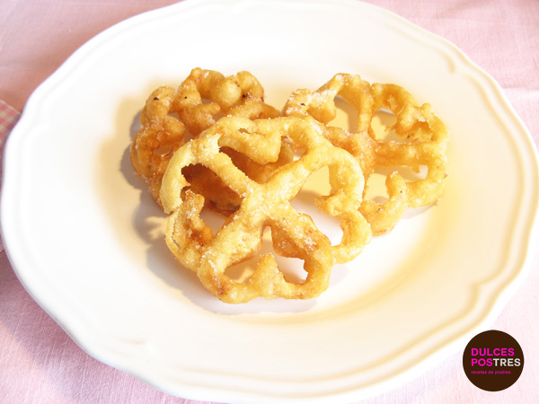

Fried Flowers

Description
Fried flowers are cooked almost everywhere in Spain and in many places they are known directly as "carnival flowers".
This recipe is one of the tricky ones. It is not that it is complicated but when it comes to elaborate it you have to take into account some small details so that the fried flowers come out perfect and we do not despair in the attempt and leave them aside.
Ingredients
- 125 grams of wheat flour.
- 250 ml of milk.
- 2 eggs.
- 125 grams of sugar.
- A pinch of salt.
- Abundant olive oil.
For the finishing:
- 100 grams of sugar.
- 1 tablespoon of cinnamon powder.
Steps
- Beat the eggs in a bowl, add the flour, sugar, milk and salt, and mix well until a creamy dough is obtained.
- Next, heat abundant oil in a frying pan and insert a special iron flower-shaped mold with a long handle to hold it; when it is very hot, put it into the bowl with the dough, taking care not to submerge it completely, and put it back into the pan. When frying, the dough will detach from the mold. When it is golden brown, remove it from the oil and transfer the flower to a serving dish, repeating the operation until the prepared dough is used up.
- Finally, prepare the finishing touch: mix the sugar with the cinnamon in a plate, sprinkle the flowers with this mixture, and serve immediately.
Back